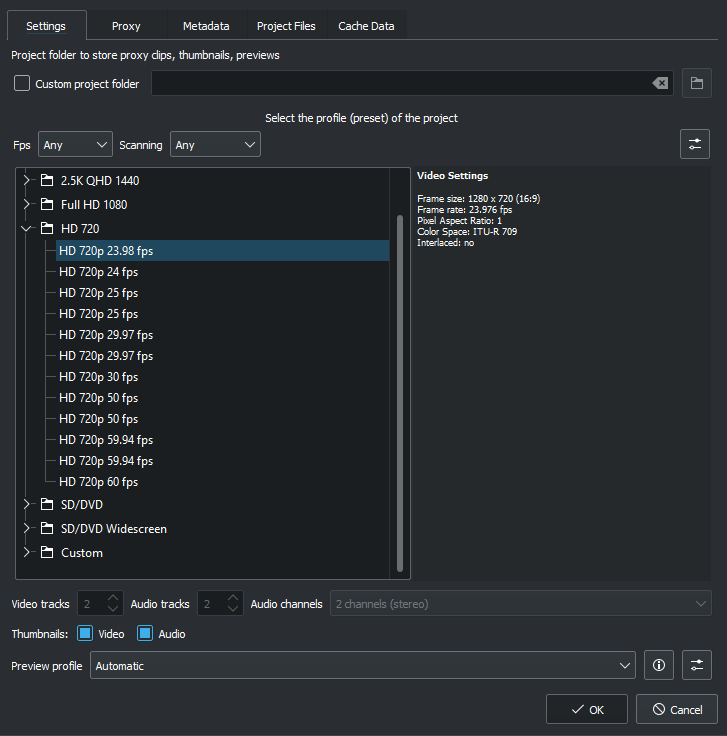
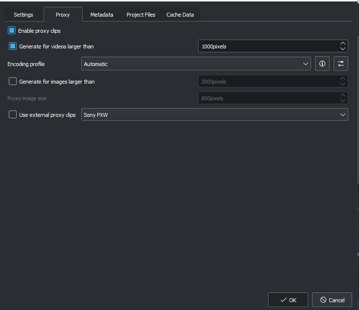
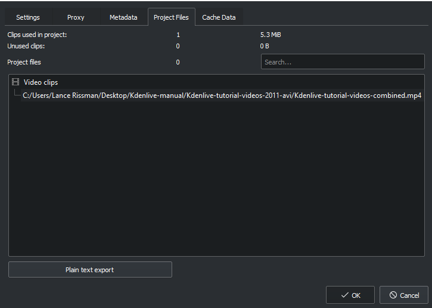
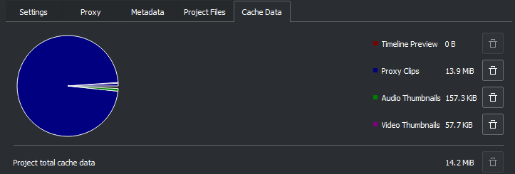

Project Settings Dialog¶
Contents
This is reached via in the Project Menu menu. This dialog has 3 Tabs.
Project Settings Tab¶
{kind=link}
The Project Settings dialog is shown when you start a new project (). This allows you to set all basic properties for your project. You can also edit the properties of your current Project Menu in .
Project Folder¶
As recommended in the Quick Start section, you should create a new folder for your project. This folder will hold all temporary files that are used during the editing of your project (thumbnails, proxy clips, etc).
Video Profile¶
The video profile will define the format of your project. A list of predefined formats is available in Kdenlive, for example DV / DVD PAL, HD 1080i 25 fps, etc.
You can use the pull-down menus to filter the list of profiles by FPS (Frames per second) or Scanning (Interlaced or Progressive)
The profile defines the video resolution, as well as display aspect ratio, color space and a few other parameters.
You should carefully choose your project format and select the one which best fits your desired output. All video operations on the project (like compositing, scaling, etc) will then use this profile. Advanced users can create custom project profiles in Manage Project Profiles.
For example, if your goal is to create a DVD, you should use a DVD profile with the correct frame rate (PAL / NTSC) and display ratio (widescreen or not).
Tracks¶
You can select the default number of audio and video tracks that your project will have. You can always add or remove tracks in an existing project.
Thumbnails¶
The Audio and Video thumbnails are shown in the timeline. They can also be enabled/disabled through buttons in the status bar.
Proxy Clips Tab¶
When the feature is enabled, Kdenlive will automatically create reduced versions of your source clips, and use these versions for your editing. Kdenlive will replace the proxy clips with the originals for a full resolution when rendering.
The option will automatically create proxy clips for all videos added to the project that have a frame width larger than x. This also applies to images.
You also have the choice to manually enable / disable proxy clips for each clip in your project tree by right-clicking on the clip and choosing .
You can choose an Encoding profile for the proxy clips, which will define the size, codecs and bitrate used when creating a proxy. The proxy profiles can be managed from the Kdenlive Settings dialog ().
Metadata Tab¶
Screenshots below show the Metadata tab for two different versions of Kdenlive. Version 0.9.6 introduces buttons to add and subtract metadata fields.
version >=0.9.5 |
version <= 0.9.6 |
Metadata set up here will be written to the files rendered from the project if render is checked in File Rendering.
Project Files Tab¶
From here you can export the project files data.
If you want to remove unused files from your project use Project > Clean Project.
Cache Data Tab¶
The Cache data tab shows the data used in the project including the timeline preview, proxy clips, audio thumbnails, and video thumbnails.
You can click on the trashcan icon to clear the cache data for that category.